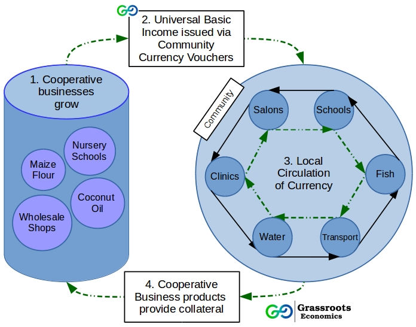

Universal Basic Income via Community Currencies

Universal Basic Income (UBI), as currently under trial in Kenya by GiveDirectly, gives regular donations to individuals in selected communities. According to GiveDirectly, these donations allow people living in poverty to save money and invest, without the typical high overhead cost of administration facing NGOs. GiveDirectly is part of a popular wave of cash transfers, with remarkable examples such as the Bolsa Familia in Brazil, which provides direct funds to about 14 million families (2012 figures). Still, history tells us that ‘the next big thing in development’ (such as microfinance in the 90s) will need a thorough review.
The idea that just giving people money (without NGOs involved) in a developing country such as Kenya will enable people to engage in economic opportunities, get out of poverty and send their children to school, is highly appealing. GiveDirectly’s UBI certainly meets the ‘paternalism test’ as used by Guy Standing: “a policy can only be just if it doesn’t impose controls on some groups that are not imposed on the most free groups in society.” But critics would say that in GiveDirectly’s pilots, poor people are still dependent on and subjected to the goodwill of the rich whose wealth may come in part from exploiting resources and cheap labor.
One of the prominent scholars on cash transfers, Christopher Blattman, argues that without the necessary supply-side provided by the government such as good education and health care, a basic income cannot function. Blattman considered political stability, economic certainty and establishing small and large firms far more important to foster the wealth of people in a country. Scouring inequality levels largely set in motion by the Structural Adjustment Programs imposed by the IMF on Kenya in the 1980s and 1990s, it is extremely hard to see how this debt will be reversed by donating small amounts to a selection of poor people.
These challenges have not deterred the current trials of UBI in Kenya, but may thwart long term change. With the goal of developing sustainable local economies in mind, one key question Grassroots Economics asks is, what is an appropriate and sustainable source of basic income?We, among many scholars, economists, activist and communities, believe that changing the type of currency used in the fight to end poverty is the key ingredient in seeing lasting and significant change.
What if the source for the basic income was from the community itself? Community currencies have been piloted in Kenya since 2010 and are showing promising results. Grassroots Economics develops cooperative businesses within communities, providing a collateral source for vouchers that are issued as an interest-free credit to community members as well as for social and environmental services. These vouchers circulate in the community and can be used at any shop, school, clinic or cooperative businesses, and form a stable medium of exchange when the Kenyan Shilling is lacking. This injection of money (liquidity) into the community in the form of a community currency, based on local assets, increases local sales and helps directly develop the local economy.
A basic income in community currency based on cooperative assets such as fish farms, maize mills, coconut oil and wholesale shops, could be more effective than basic income based on donor funds.
As shown in the diagram above, in this paradigm money for donations, cash transfers and UBI are pooled and put into developing cooperative assets. Following which: 1) Cooperative business profits and assets are issued as vouchers to the community as a basic income. 2) All businesses within the community can accept and trade these vouchers which act as a community currency that increases local liquidity and circulation. 3) Finally anyone can use the vouchers at the cooperative businesses, where they are then reissued to the community, completing the cycle.
Community currencies enable the funding to be more effective, as they encourage circulation in the community long term, increasing local trade, and thus economic development. As more and more cooperative businesses are developed, their assets are issued as more vouchers to more families across the community and can be used at any shop or school in the community. While the impact may not be as fast, over time, a UBI based on Community Currency could outpace one funded by donor support. By directly developing cooperative assets into a system that distributes assets and profits to the greater community, community currencies can directly effect local development and outlast all forms of donation-driven cash transfer.
While studies are currently underway on Universal Basic Income it is important to also test other models. To address which model of basic income would be faster and more cost effective at developing local sustainability, pilots and RCTs on community currencies as a source of basic income are needed and are being sought by several universities around the globe.
#UBI #communitycurrencies #research #cashtransfers #donations